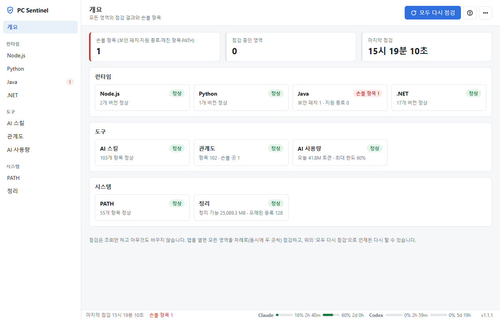
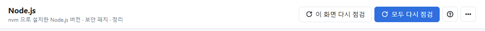
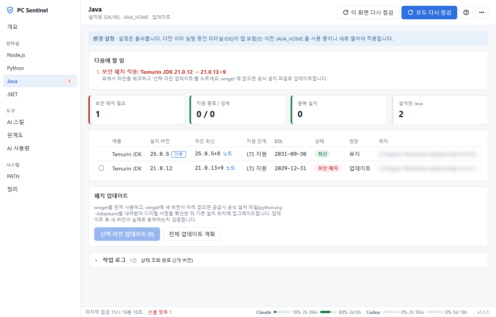
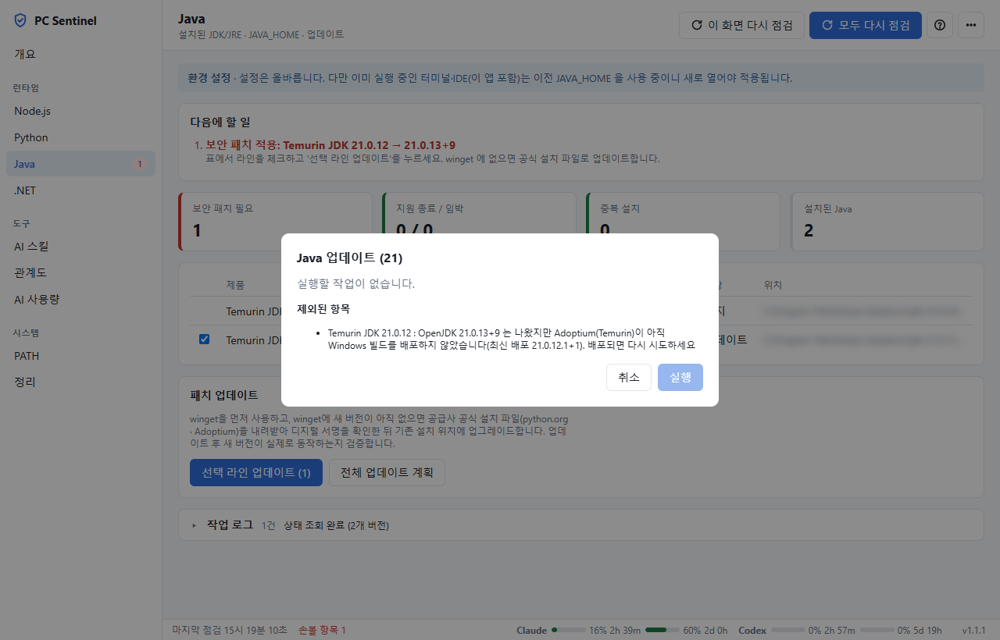
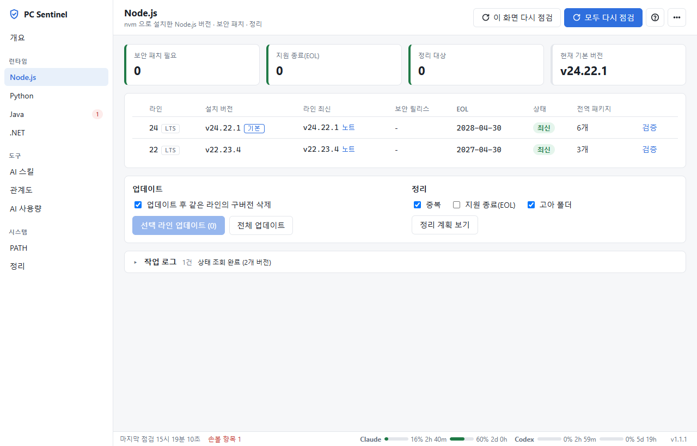
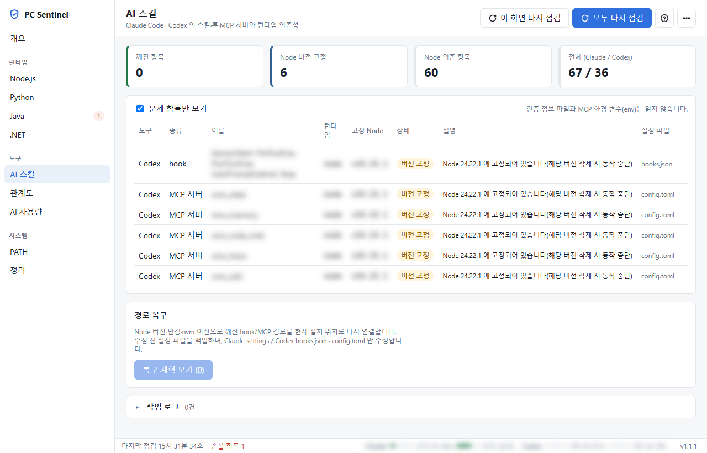
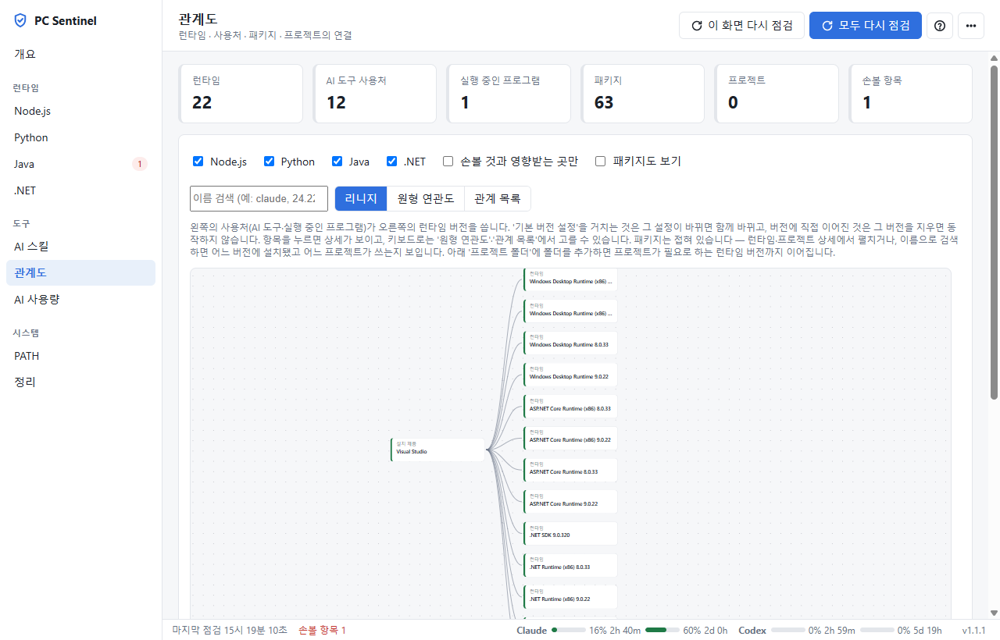
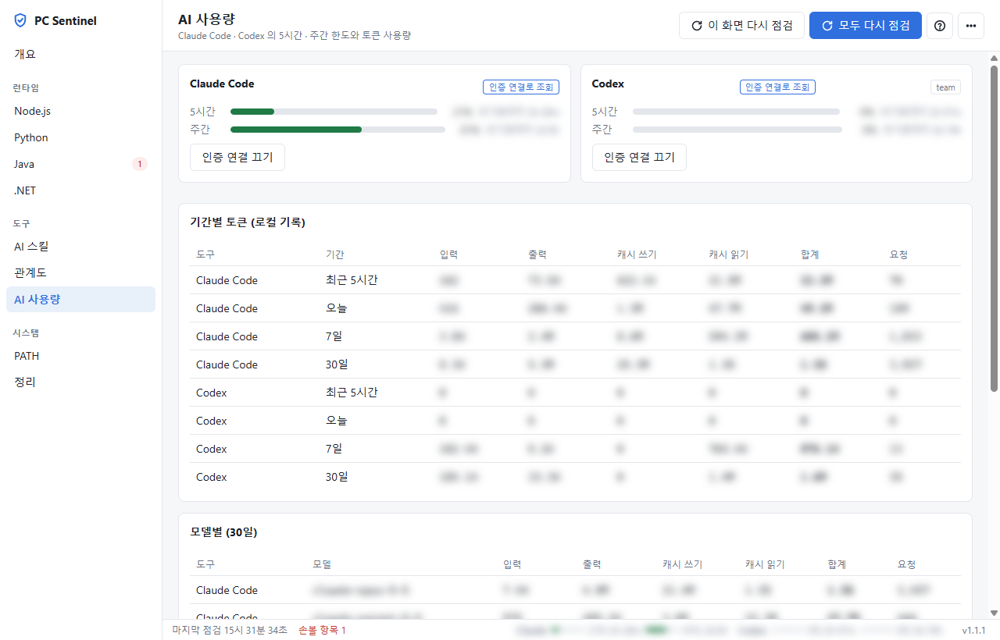
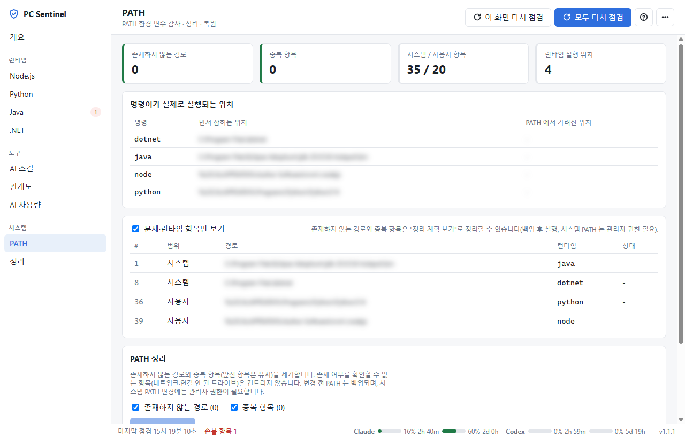
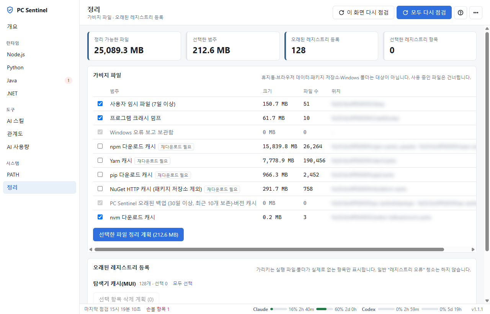

PC Sentinel 사용 안내서
개발 PC 에 깔린 Node.js·Python·Java·.NET 의 버전과 보안 패치, AI 도구 스킬, PATH 를 한 화면에서 점검하고 필요한 것만 안전하게 고치는 Windows 앱입니다.
무엇을 하는 앱인가요
앱을 열면 아래 영역을 차례로 점검하고, 손볼 것이 있으면 무엇을 왜 해야 하는지 알려 줍니다.
| 영역 | 알려 주는 것 | 할 수 있는 일 |
|---|---|---|
| Node.js · Python · Java · .NET | 설치된 버전, 같은 라인의 최신 버전, 보안 패치 여부, 지원 종료(EOL) 날짜 | 보안 패치 업데이트, 중복·지원 종료 버전 정리, Python 버전 이전 |
| AI 스킬 | Claude Code·Codex 의 스킬·훅·MCP 서버가 어떤 런타임에 기대는지, 깨진 경로 | 깨진 경로 복구 (설정 파일 백업 후) |
| 관계도 | 런타임 ↔ 사용하는 도구·프로그램·프로젝트의 연결 | 지우면 영향받는 곳 미리 확인 |
| AI 사용량 | Claude Code·Codex 의 5시간·주간 한도와 토큰 사용량 | 남은 한도와 초기화 시각 확인 |
| PATH · 정리 | 없는 경로·중복 PATH, 지워도 되는 임시 파일·캐시 | PATH 정리(백업·복원), 파일 정리 |
설치와 업데이트
- 릴리스 페이지 github.com/LeeYoungJin/pc-sentinel-releases 에서 최신 버전의
PC Sentinel_x.y.z_x64-setup.exe를 내려받습니다. - 설치 파일을 실행합니다. 이 PC 의 모든 사용자용으로
Program Files에 설치되므로 관리자 권한 확인(UAC) 창이 한 번 뜹니다. - 시작 메뉴에서 PC Sentinel 을 엽니다. 처음 열면 모든 영역을 자동으로 점검합니다.
새 버전이 나오면
앱이 시작할 때 새 버전을 확인하고 안내 창을 띄웁니다. '지금 업데이트'를 누르면 내려받아 설치한 뒤 앱이 다시 시작됩니다. 아래 상태 표시줄의 새 버전 설치 버튼으로도 할 수 있습니다.
화면 구성
왼쪽 메뉴에서 영역을 고르고, 위쪽 앱 바에서 다시 점검하고, 아래 상태 표시줄에서 진행 상황을 봅니다.

1 2 3 4- 1왼쪽 메뉴 · 런타임 / 도구 / 시스템으로 묶여 있습니다. 숫자 배지는 손볼 항목 수, 도는 표시는 작업 중이라는 뜻입니다.
- 2앱 바 · 이 화면 다시 점검(지금 보는 영역만), 모두 다시 점검, 도움말(?), 더보기(⋯: 변경 내역·업데이트 확인·설정·버전 정보).
- 3영역별 카드 · 상태와 한 줄 요약을 보여 줍니다. 누르면 그 화면으로 이동합니다.
- 4상태 표시줄 · 점검 중인 영역, 마지막 점검 시각, AI 사용 한도 막대, 앱 버전. 한도 막대를 누르면 AI 사용량 화면으로 갑니다.

점검 결과 읽는 법
개요 카드와 메뉴의 배지는 다음 뜻입니다.
| 표시 | 뜻 | 할 일 |
|---|---|---|
| 정상 | 손볼 것이 없습니다. | 없음 |
| 해당 사항 없음 | 이 PC 에 그 런타임이 설치되어 있지 않습니다. 점검할 것이 없으니 정상입니다. | 없음 |
| 손볼 항목 1 | 보안 패치·지원 종료·깨진 경로 등 고칠 것이 있습니다. | 카드를 눌러 '다음에 할 일'을 따라 합니다. |
| 점검 중 | 지금 조회하고 있습니다. 두 영역씩 차례로 점검합니다. | 잠시 기다립니다. |
| 점검 실패 | 조회 중 오류가 났습니다. | 그 화면의 오류 문구를 확인하고 '이 화면 다시 점검'을 누릅니다. |
| 대기 | 아직 차례가 오지 않았습니다. | 없음 |
런타임 표의 상태 칸은 최신 보안 패치 지원 종료 등으로 각 버전의 상황을 알려 줍니다. 네트워크가 막혀 최신 정보를 못 받으면 마지막으로 저장한 정보를 쓰고 노란 안내를 띄웁니다.
런타임 업데이트
보안 패치가 필요한 버전이 있으면 화면 위쪽 다음에 할 일에 무엇을 할지 나옵니다. 아래는 Java 21 에 보안 패치가 나온 경우입니다.

- 표에서 업데이트할 라인의 체크 칸을 고르고 선택 라인 업데이트를 누릅니다. (전부 하려면 '전체 업데이트 계획')
- 계획 확인 창이 뜹니다. 무엇을 설치·삭제하는지, 제외된 항목은 왜 제외됐는지 보여 줍니다. 아직 아무것도 바뀌지 않았습니다.
- 내용이 맞으면 실행을 누릅니다. 마지막으로 앱이 띄우는 Windows 확인 창에서 '실행'을 눌러야 시작됩니다.
- 진행 상황은 화면 아래 작업 로그에 남고, 끝나면 새 버전이 실제로 동작하는지 검증한 뒤 다시 점검합니다.

Node.js
nvm-windows 로 설치한 버전을 관리합니다. 업데이트 후 같은 라인의 구버전 삭제, 중복·지원 종료·고아 폴더 정리를 할 수 있습니다. 실행 중인 Node 버전은 삭제하지 않고 보류합니다.
Python · Java
winget 을 먼저 쓰고, winget 에 새 버전이 없으면 python.org·Adoptium 공식 설치 파일을 받아 디지털 서명을 확인한 뒤 설치합니다. Python 은 오래된 버전에서 새 버전으로 옮기는 버전 이전도 있습니다.

.NET 은 Visual Studio 등이 함께 설치한 버전이 많아, 설치 주체를 보여 주고 직접 지워도 안전한 것만 정리 대상으로 고릅니다.
AI 스킬
Claude Code·Codex 에 설치한 스킬·훅·MCP 서버가 어느 런타임 버전에 기대는지 보여 줍니다. Node 버전을 지우면 멈추는 항목은 버전 고정, 이미 경로가 끊긴 항목은 깨짐으로 표시됩니다.

깨진 항목은 경로 복구로 현재 설치된 Node 위치에 다시 연결할 수 있습니다. 설정 파일은 고치기 전에 백업합니다. 인증 정보 파일과 MCP 환경 변수는 읽지 않습니다.
관계도
런타임과 그것을 쓰는 AI 도구·실행 중인 프로그램·프로젝트를 선으로 이어 보여 줍니다. 어떤 버전을 지우기 전에 영향받는 곳을 확인할 때 씁니다.

| 보기 | 언제 쓰나요 |
|---|---|
| 리니지 | 왼쪽 사용처 → 오른쪽 런타임 버전의 흐름을 따라갈 때 |
| 원형 연관도 | 전체 연결을 한눈에 볼 때 |
| 관계 목록 | 표로 찾아보거나 키보드로 고를 때 |
화면 아래 프로젝트 폴더에 작업 폴더를 추가하면 package.json·requirements.txt 등을 읽어 프로젝트가 필요로 하는 런타임 버전까지 이어 줍니다(읽기만 하며 최대 10개).
AI 사용량
Claude Code 와 Codex 를 얼마나 썼는지, 사용 한도가 얼마나 남았는지 봅니다.

막대 색은 80% 이상 노랑, 90% 이상 빨강입니다. 같은 한도 막대가 아래 상태 표시줄에도 항상 보입니다.
PATH · 정리


PATH 정리는 존재하지 않는 경로와 중복(앞선 항목은 유지)만 지우고, 바꾸기 전 PATH 를 백업해 언제든 복원할 수 있습니다. 시스템 PATH 를 고칠 때는 관리자 권한 창이 뜹니다.
정리는 7일 지난 임시 파일, 크래시 덤프 같은 것을 지웁니다. npm·Yarn·pip 캐시는 지우면 다음 설치 때 다시 내려받아야 하므로 '재다운로드 필요'로 표시되고 직접 골라야 합니다. 휴지통·브라우저 데이터·Windows 폴더는 대상이 아닙니다.
설정
오른쪽 위 ⋯ → 설정에서 업데이트 파일을 내려받을 폴더를 확인하고 바꿀 수 있습니다.
| 상황 | 업데이트 파일 위치 |
|---|---|
| 직접 고른 폴더가 있음 | 그 폴더 |
| 고른 폴더 없음 | 회사 기본 폴더 (상위 폴더가 있으면 앱이 자동으로 만듦) |
| 회사 기본 폴더를 쓸 수 없음 | 시스템 임시 폴더 — 업데이트 안내 창에서 '폴더 만들기'를 권합니다 |
네트워크·이동식 드라이브, Windows·Program Files 폴더, 쓰기 권한이 없는 폴더는 고를 수 없습니다. 업데이트할 때는 그 폴더 안에 현재 사용자와 관리자만 접근할 수 있는 작업 폴더를 만들어 내려받습니다.
안전 장치
- 두 번 확인 · 화면의 계획 확인 + 앱이 직접 띄우는 Windows 확인 창. 화면만으로는 실행되지 않습니다.
- 실행 직전 다시 확인 · 계획을 본 뒤 PC 상태가 바뀌었으면 다시 계획합니다.
- 모르면 지우지 않음 · 사용 중인 버전, 확인할 수 없는 폴더, 다른 프로그램이 설치한 .NET 은 보류합니다.
- 백업 · PATH·AI 도구 설정 파일은 고치기 전에 백업합니다.
- 개인정보 가림 · 화면과 로그에서 사용자 폴더 이름·SID 를 가립니다. 인증 정보 파일은 읽지 않습니다(AI 사용량 인증 연결을 직접 켠 경우의 접근 토큰만 예외).
- 앱 무결성 · 실행할 때마다 앱 파일이 설치 때와 같은지 확인하고, 다르면 실행하지 않습니다.
자주 묻는 질문
Node.js 가 '해당 사항 없음'으로 나옵니다.
이 PC 에 nvm-windows 가 없어서 점검할 Node 버전이 없다는 뜻입니다. 정상입니다. nvm-windows 없이 설치한 Node.js 가 있으면 화면에 그 사실을 안내하지만 관리하지는 않습니다.
'점검 실패'가 떴습니다.
그 화면을 열면 빨간 상자에 이유가 나옵니다. 잠깐의 네트워크 문제라면 '이 화면 다시 점검'을 누르세요. 계속되면 오류 문구를 담당자에게 전달해 주세요(사용자 정보는 이미 가려져 있습니다).
업데이트가 보안 프로그램에 막힙니다.
⋯ → 설정에서 업데이트 폴더가 사내 안내의 폴더인지 확인하세요. 시스템 임시 폴더로 나오면 '폴더 만들기'를 누르거나 안내받은 폴더를 고른 뒤 다시 업데이트합니다.
손볼 항목을 고쳤는데 숫자가 그대로입니다.
앱이 이미 열려 있는 동안 다른 곳에서 설치했다면 '이 화면 다시 점검'을 누르세요. 새로 설치한 PATH·JAVA_HOME 은 이미 열려 있는 터미널·IDE 에는 다시 열어야 적용됩니다.
AI 사용량의 한도가 '정보 없음'입니다.
Claude 는 로컬 기록에 한도 정보가 없어 '인증으로 자세히 보기'를 켜야 보입니다. 인증이 만료됐다는 안내가 나오면 Claude Code 나 Codex 를 한 번 실행해 로그인을 갱신하세요.
무엇이 바뀌었는지 보고 싶습니다.
⋯ → 변경 내역에서 버전별 변경 사항을 봅니다. 새 버전을 처음 실행하면 바뀐 점이 자동으로 표시됩니다.